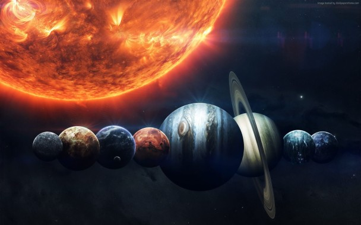

Ut fra denne definisjonen har solsystemet vårt åtte planeter. Fra sola og utover er det: Merkur, Venus, jorda, Mars, Jupiter, Saturn, Uranus og Neptun. De fire innerste planetene i solsystemet vårt er steinplaneter. De har en fast overflate og består for det meste av stein og metall. Regnet fra sola og utover er dette Merkur, Venus, jorda og Mars.
De fire ytterste planetene er gassplaneter. De består hovedsakelig av gasser som hydrogen og helium, og har mye større masse enn steinplanetene. Regnet fra sola og utover er dette Jupiter, Saturn, Uranus og Neptun. De har alle en ring av støv og partikler rundt seg.
Kanskje er solsystemet vårt ikke unikt i universet. Forskerne har funnet flere stjerner med planeter i bane rundt seg. Disse planetene kalles for ekstrasolare planeter eller eksoplaneter. Noen av disse stjernene har flere eksoplaneter i et solsystem. Vårt galaktiske nabolag Den nærmeste stjernen til solsystemet vårt er Alfa Centauri. Dette er et system med tre stjerner som ligger cirka 4,4 lysår borte.
Det nærmeste solsystemet med en planet som vi kjenner til er Epsilon Eridani. Det ligger rundt 10,5 lysår borte. Der går planeten Epsilon Eridani b i bane rundt stjernen. Denne planeten har en masse på omtrent 1,5 ganger Jupiters masse. Solsystemet vårt ligger i en av Melkeveiens ytterste spiralarmer. Vi befinner oss mellom 25 000 og 28 000 lysår fra galaksens sydende kjerne. På grunn av plasseringen og hastigheten gjennom galaksen befinner solsystemet vårt seg i et kosmisk sett rolig nabolag. Kanskje har de relativt stabile omgivelsene gjort at liv fikk tid til å utvikle seg.
its a day in space
crazy feeling
Vårt solsystem
Solsystemet består av sola og planetene, samt andre typer objekter som går i bane rundt sola.
En planet er et himmellegeme som går rundt en stjerne, har nok masse til at den er rund og har ryddet området rundt for mindre himmelobjekter. Den har ikke nok masse til å starte fusjonsreaksjoner og bli en stjerne.Ut fra denne definisjonen har solsystemet vårt åtte planeter. Fra sola og utover er det: Merkur, Venus, jorda, Mars, Jupiter, Saturn, Uranus og Neptun. De fire innerste planetene i solsystemet vårt er steinplaneter. De har en fast overflate og består for det meste av stein og metall. Regnet fra sola og utover er dette Merkur, Venus, jorda og Mars.
De fire ytterste planetene er gassplaneter. De består hovedsakelig av gasser som hydrogen og helium, og har mye større masse enn steinplanetene. Regnet fra sola og utover er dette Jupiter, Saturn, Uranus og Neptun. De har alle en ring av støv og partikler rundt seg.
Kanskje er solsystemet vårt ikke unikt i universet. Forskerne har funnet flere stjerner med planeter i bane rundt seg. Disse planetene kalles for ekstrasolare planeter eller eksoplaneter. Noen av disse stjernene har flere eksoplaneter i et solsystem. Vårt galaktiske nabolag Den nærmeste stjernen til solsystemet vårt er Alfa Centauri. Dette er et system med tre stjerner som ligger cirka 4,4 lysår borte.
Det nærmeste solsystemet med en planet som vi kjenner til er Epsilon Eridani. Det ligger rundt 10,5 lysår borte. Der går planeten Epsilon Eridani b i bane rundt stjernen. Denne planeten har en masse på omtrent 1,5 ganger Jupiters masse. Solsystemet vårt ligger i en av Melkeveiens ytterste spiralarmer. Vi befinner oss mellom 25 000 og 28 000 lysår fra galaksens sydende kjerne. På grunn av plasseringen og hastigheten gjennom galaksen befinner solsystemet vårt seg i et kosmisk sett rolig nabolag. Kanskje har de relativt stabile omgivelsene gjort at liv fikk tid til å utvikle seg.